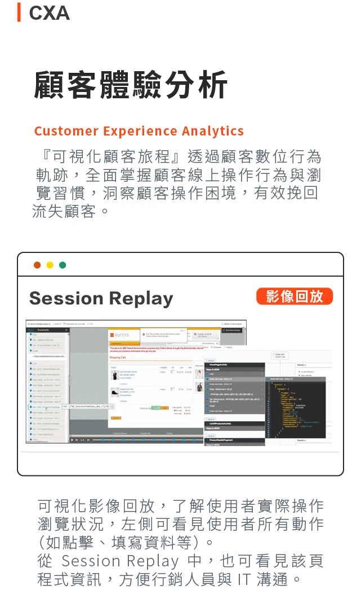
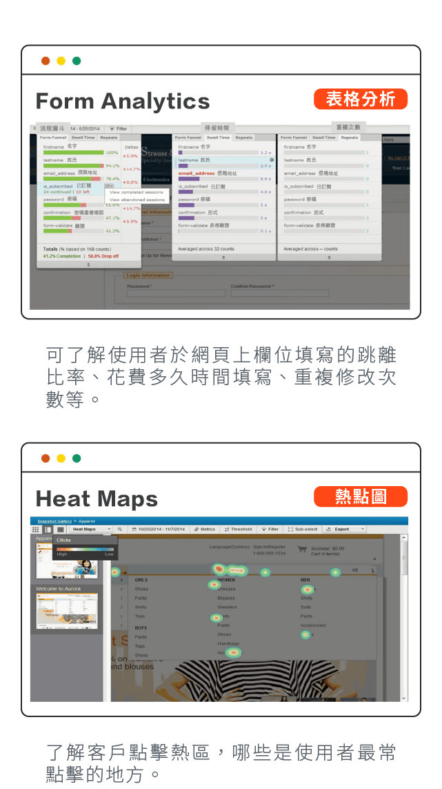
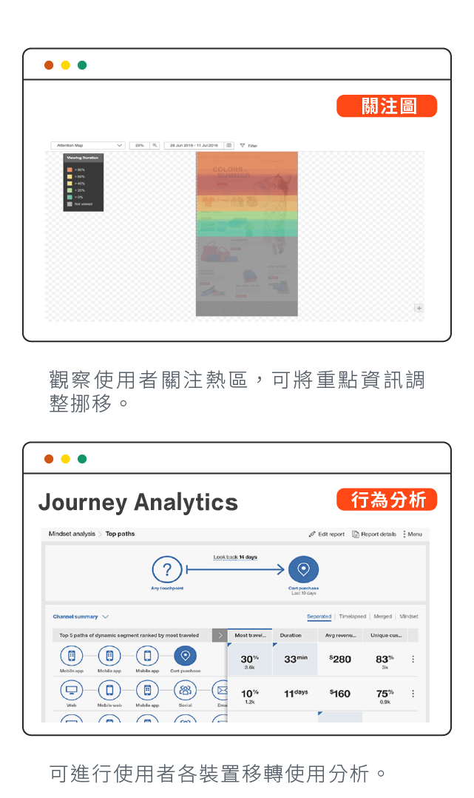
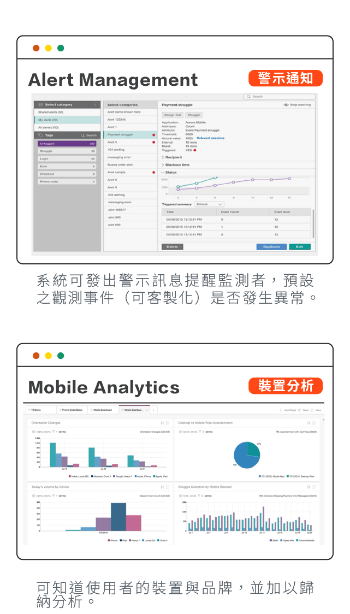
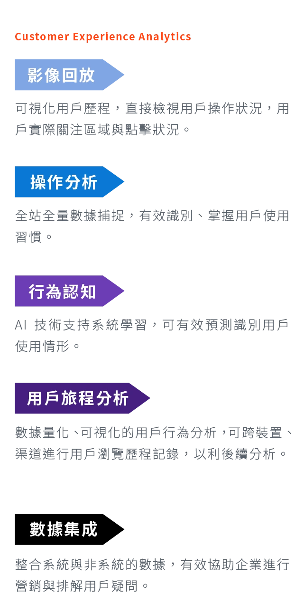
HCL Discover · Digital Experience Analytics
HCL Discover 是 HCLSoftware 的企業級數位體驗分析平台。它用工作階段回放、掙扎偵測與熱圖，讓您看見顧客在網站與 App 上每一次卡關、放棄與成交的原因。奧洛負責 HCL Discover 的轉售、建置與維護。
逐頁重現顧客的點擊、輸入、捲動與錯誤，可依客戶、時間、頁面與事件搜尋，從指標異常一路找到行為原因。
自動標記暴怒點擊、無效點擊、表單放棄與頁面迴圈，並偵測轉換率與錯誤率的異常波動。
點擊熱圖、注意力圖，以及每個表單欄位的填寫時間、重複修改次數與放棄率，直接指出版面與欄位的問題。
以圖形化方式定義事件，組合成開戶、申貸、轉帳、繳費等旅程漏斗，看見每一步的轉換與流失。
儀表板、計分卡與定期報表；事件或異常達到門檻時以電子郵件通知，專員可即時介入。
HCL Discover+ 為每段工作階段產生自然語言摘要，標出高風險旅程與原因，不必逐段人工檢視。
以漏斗找出流失的步驟，用回放重現卡關的瞬間，例如文件上傳失敗、身分驗證逾時或提示看不懂，排出修正的優先順序。
設定「停留超過一段時間」「同一欄位重複點擊」「出現錯誤訊息」等告警條件，觸發後由專員或客服主動協助顧客完成。
比較搜尋、LINE、EDM、社群等來源進站後的行為深度與轉換，而不只看流量，找出把顧客導出站外的內容。
產品功能依 HCLSoftware 公開文件整理。
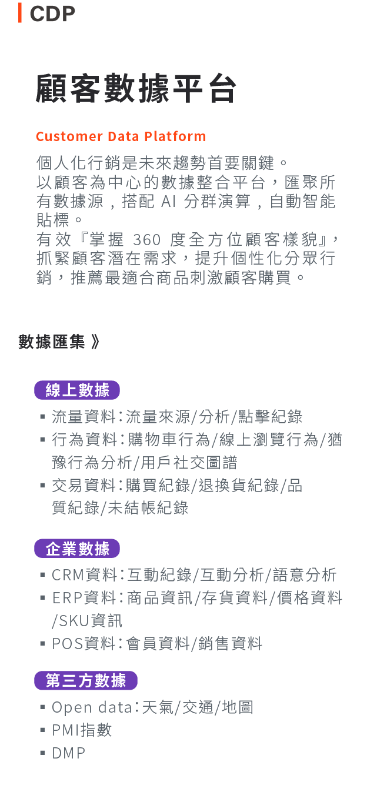
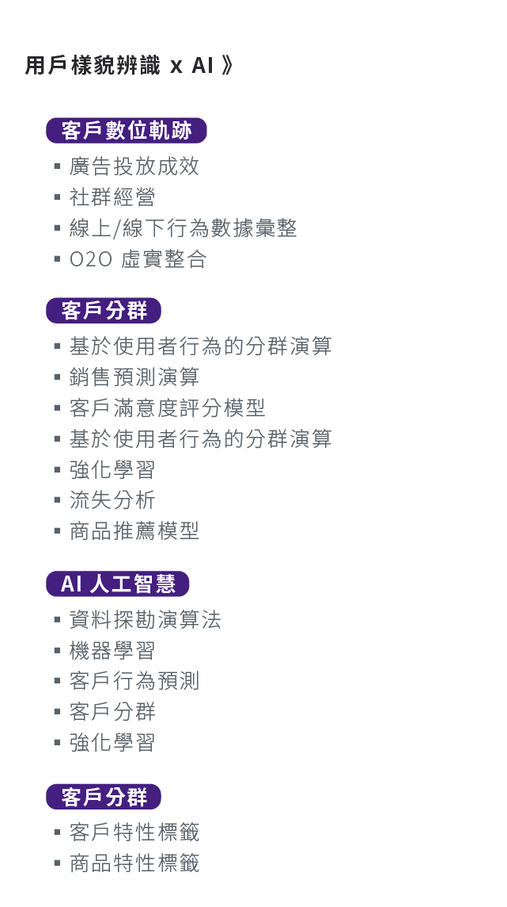
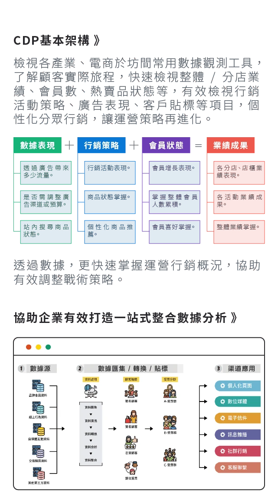
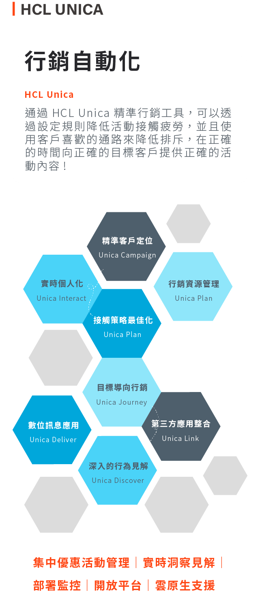
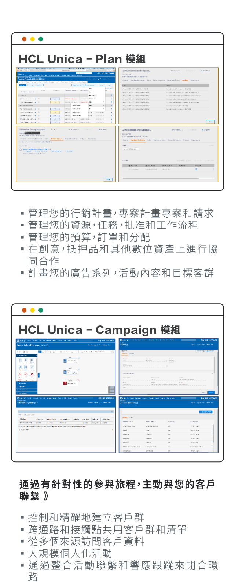
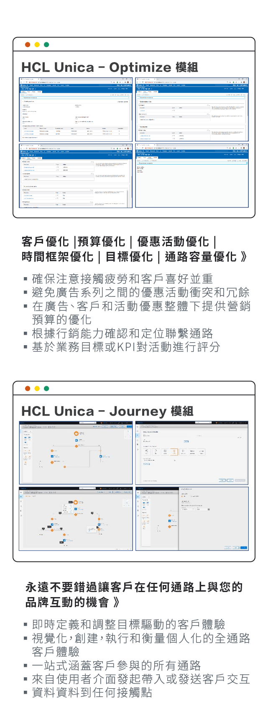
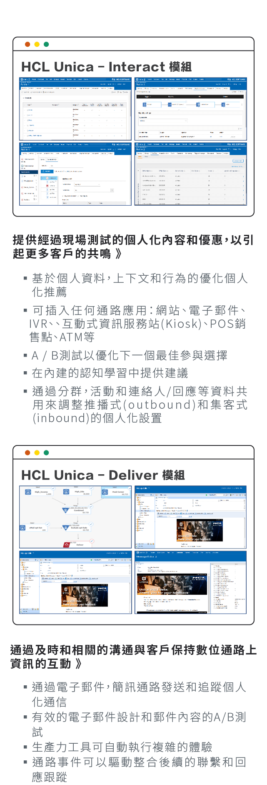
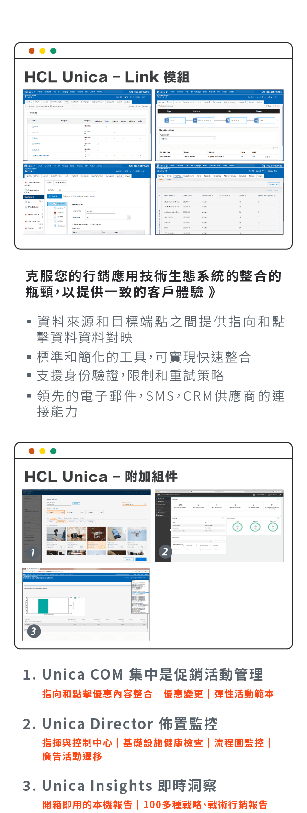
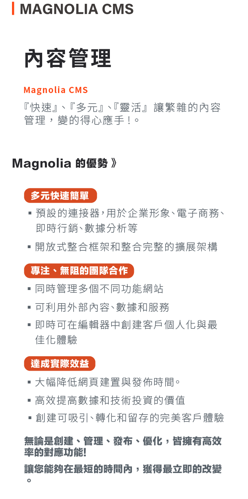
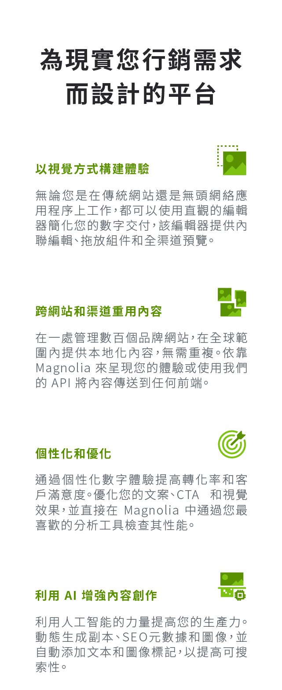
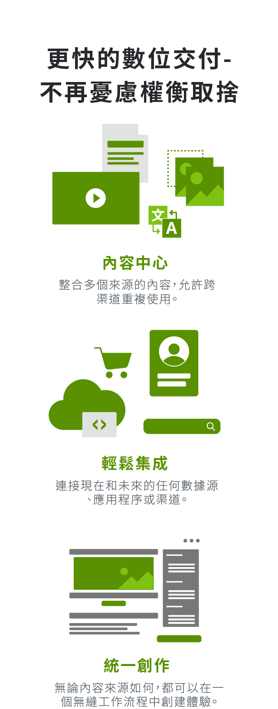
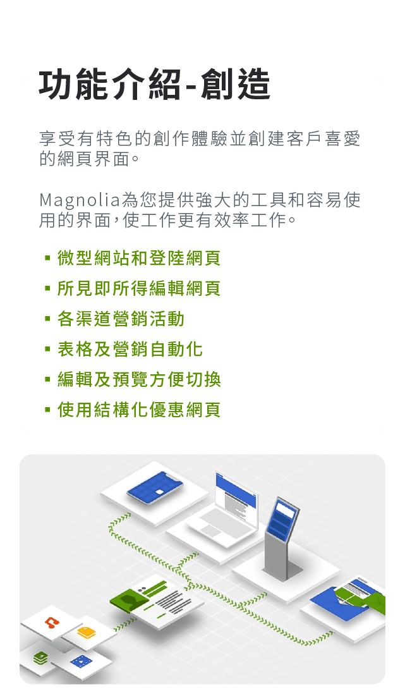
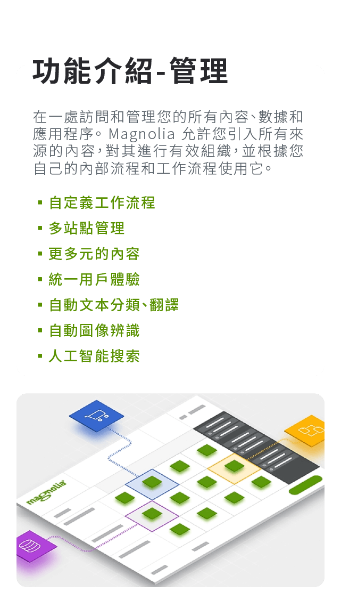
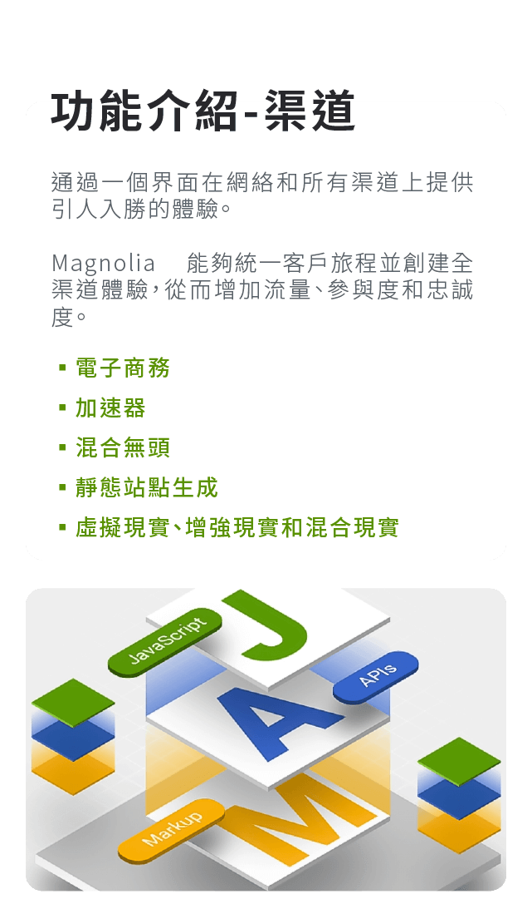
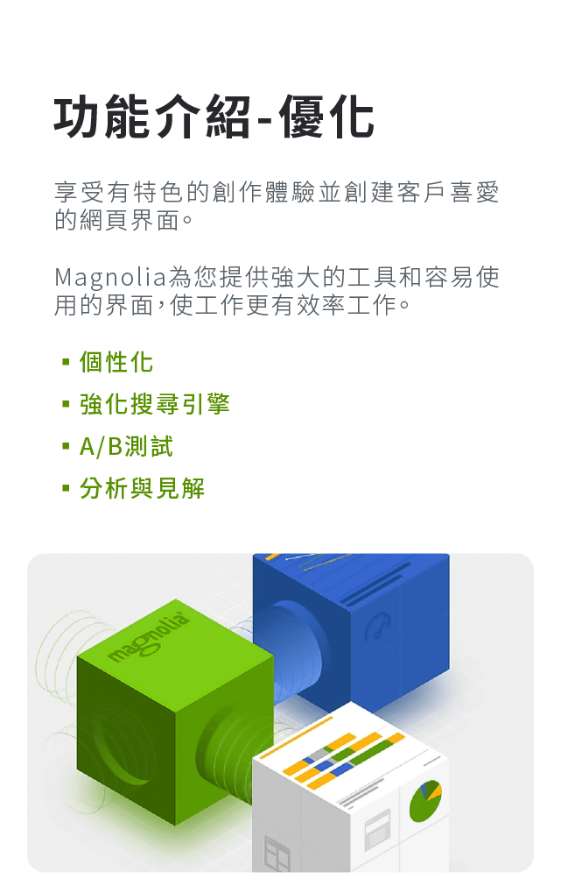